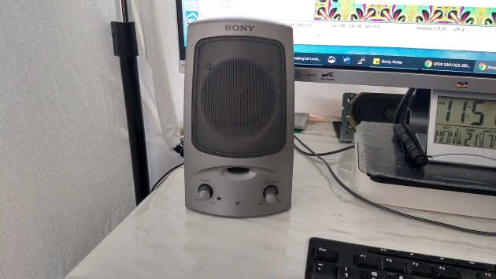
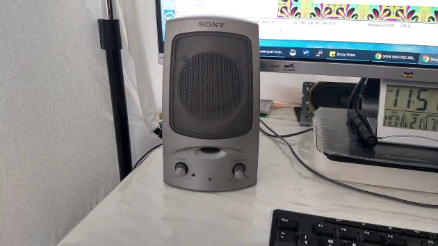

Simple USB sound system for PC
Here's a simple sound system for my PC that did not cost me a cent since I already have all the parts. The aim is to play sound on the PC without having to use a power adapter for the amplifier. To do this, 3 components are required:- 3D USB sound card (AU$6 ebay).
- 5V PAM8403 sound module (AU$1 ebay).
- 2 speakers

The PAM8403 amplifier is needed as the stereo output from the sound card can only drive headphones, not speakers. The steps to put the whole thing together are:
- Solder male header pins onto the speaker pads on the PAM8403 sound module.
- Strip the plastic shell from the sound card and solder wires from the stereo output socket pads to the L-Gnd-R input pads of the PAM8403.
- Solder wires from the USB 5V and Gnd pads on the sound card to the 5V-Gnd pads on the PAM8403.
- Insert a piece of double-sided tape between the sound card and PAM8304 to hold them together.

My original Sony speakers sounded like this. 🖱️


The DIY pair sounds just as good. 🙂